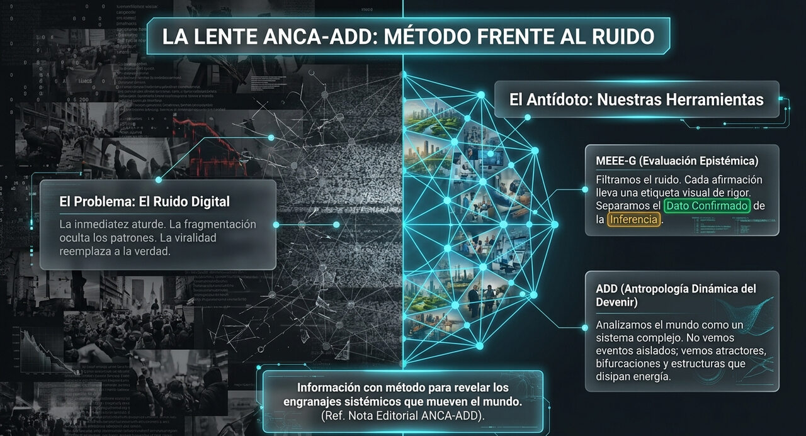
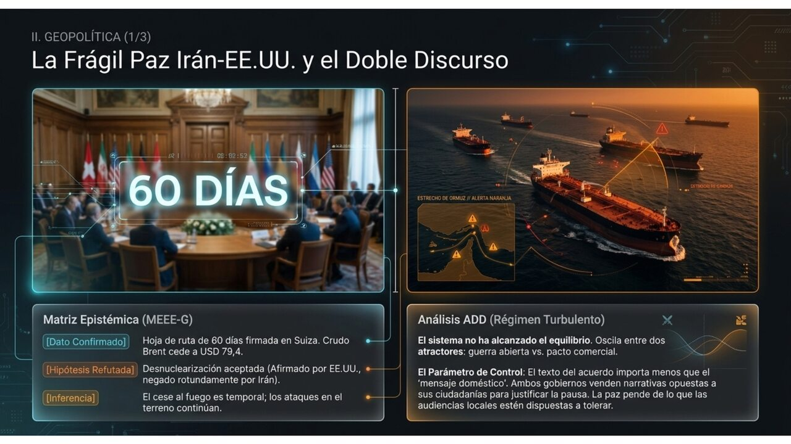
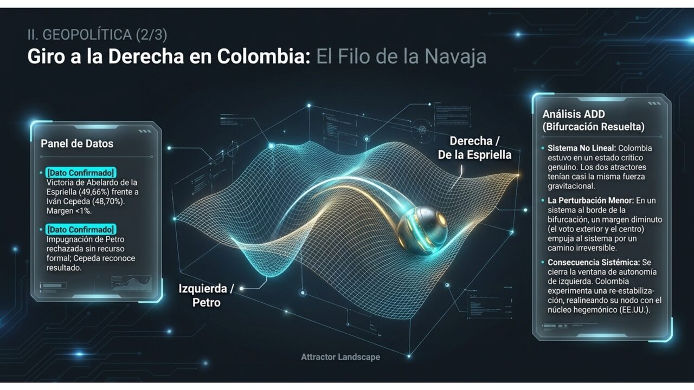
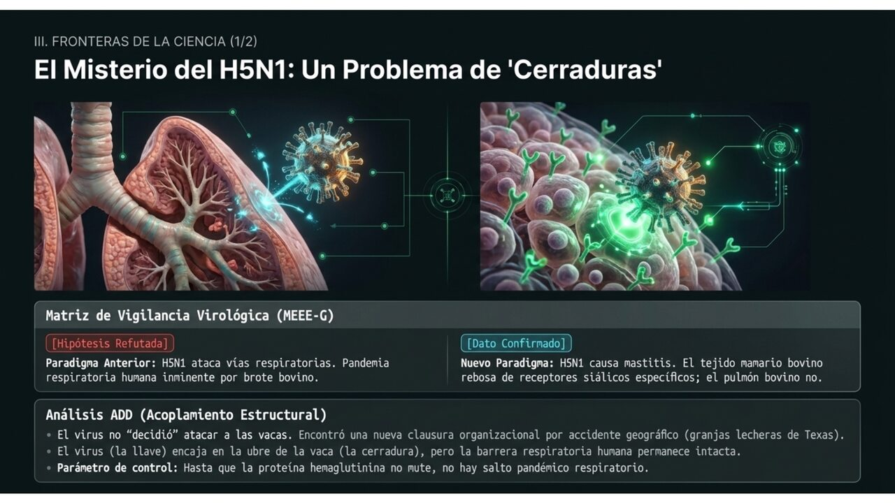
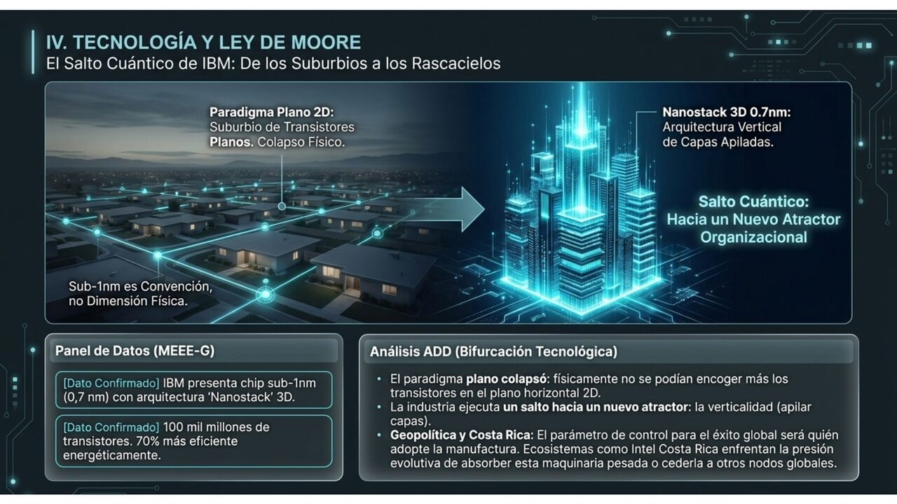
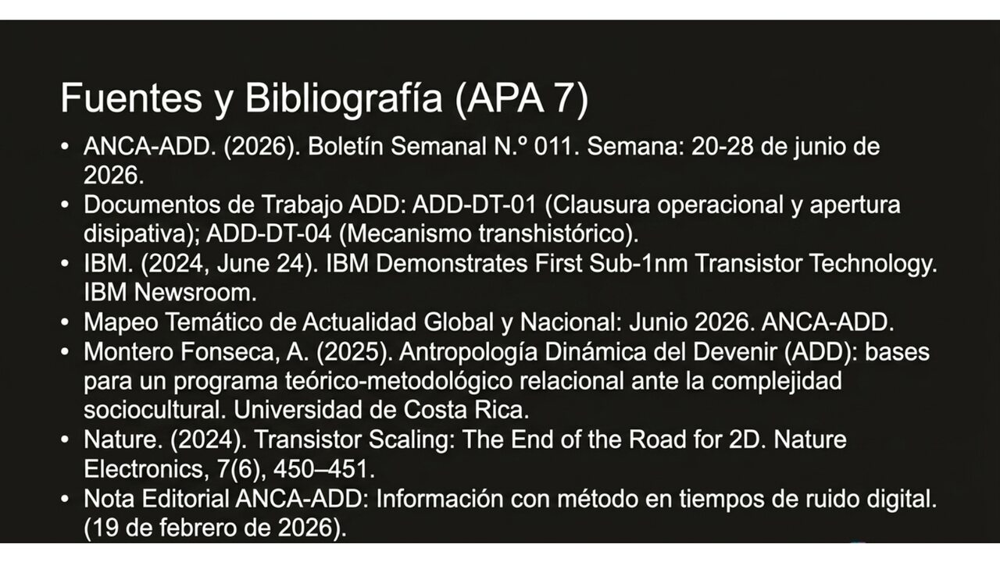

IRÁN·SUIZA Hoja de ruta de 60 días acordada en Bürgenstock; tres grupos técnicos activos; Brent cede a ~USD 79,4///COLOMBIA De la Espriella presidente electo: 49,66 % vs. 48,70 % Cepeda; Petro impugnó, Cepeda reconoció; asumirá el 7 de agosto///H5N1 Science Advances revela por qué el virus ataca ubres y no pulmones: receptores siálicos concentrados en tejido mamario///HELICONIUS Mariposas de C. y S. América viven hasta 25× más que parientes; nuevo modelo de investigación sobre el envejecimiento///IBM Primer chip sub-1 nm: arquitectura «nanostack», ~100.000 M transistores, 70 % más eficiente que generación 2 nm///COSTA RICA Mesa técnica sobre Crucitas: PLN propone tokenización del oro; 654 mociones; 5 bancadas buscan salida negociada///
Agente Noticioso Crítico de Actualidad — Antropología Dinámica del Devenir
BOLETÍN SEMANAL
Evaluación epistémica, lectura dinámica y análisis de sistemas-mundo de la semana
Edición: N.° 011Semana: 20–28 de junio de 2026Cierre: domingo 28 jun, 06:48 (San José)Registros: MEEE-G · ADD · Sistemas-Mundo
Boletín Semanal N.° 011 · síntesis de los seis vectores epistémicos de la semana.
Panorama de la semana
La semana entrega dos resultados que el boletín venía siguiendo: Colombia resolvió su bifurcación electoral —con un margen de menos de un punto que forzó a Petro a impugnar y a Cepeda a reconocer— e Irán y Estados Unidos instalaron en Suiza la hoja de ruta de 60 días que convierte el memorando de Versalles en un proceso vivo. El crudo cedió más: el Brent tocó USD 79,4, el nivel más bajo desde el inicio del conflicto en febrero.
En ciencia, dos hallazgos de naturaleza muy distinta comparten la semana: el primero resuelve un misterio virológico con implicaciones pandémicas directas —por qué el H5N1 ataca las ubres de las vacas y no sus pulmones—; el segundo descubre que un género de mariposas tropicales de nuestra región vive hasta 25 veces más que sus parientes y casi sin envejecer. IBM anuncia el primer chip por debajo del nanómetro y con ello reabre el debate sobre si la Ley de Moore sobrevive. Y en Costa Rica, el debate sobre Crucitas mutó: la propuesta de tokenización del oro entró al tablero legislativo, y la semana cierra con cinco bancadas sentadas en una mesa técnica —un movimiento que el análisis del N.° 010 y su anexo habían anticipado como posible si el parámetro de control (qué tipo de valor decide proteger el Estado) se desplazaba.

La lente ANCA-ADD — método epistémico y dinámico que sostiene cada edición de este boletín.
01Política y geopolítica
Irán y EE.UU. instalan en Suiza la arquitectura de un acuerdo de 60 días
Tres grupos técnicos, mensajes contradictorios sobre lo nuclear y el Brent a mínimos desde febrero.

Lectura ADD: régimen turbulento con atractor emergente — Bürgenstock, los 60 días y la divergencia de narrativas nucleares.
Hechos verificados
Las negociaciones entre Estados Unidos e Irán comenzaron en el complejo de Bürgenstock (Suiza) el 21 de junio, con mediación de Qatar y Pakistán. Tras aproximadamente 18 horas de sesiones, los mediadores confirmaron una hoja de ruta de 60 días y la creación de tres grupos de trabajo: nuclear, sanciones y resolución de disputas. Las conversaciones técnicas continuaron durante la semana.
El Departamento del Tesoro emitió una exención de 60 días para la venta de petróleo iraní, mientras Irán obtuvo acceso a USD 12.000 millones de activos congelados. El crudo Brent cayó a ~USD 79,4 por barril —mínimo desde el inicio del conflicto el 28 de febrero—. Sin embargo, la semana incluyó una interrupción: Irán suspendió brevemente el diálogo tras amenazas del presidente Trump de reanudar ataques si Teherán no controlaba a Hezbolá en el Líbano, donde violaciones graves habían amenazado el proceso.
El punto más cargado de la semana fue la divergencia sobre el programa nuclear. El vicepresidente J.D. Vance declaró que Irán había aceptado «el primer paso hacia la desnuclearización permanente». Irán lo negó de forma explícita: el presidente del Parlamento, Ghalibaf, y los medios estatales informaron que el tema nuclear no fue negociado durante las 18 horas de sesiones.
Análisis epistémico · MEEE-G
Afirmación
Código
Justificación procesual
Las negociaciones en Suiza se celebraron y los mediadores confirmaron la hoja de ruta de 60 días.
[DC]
Comunicados oficiales de Qatar y Pakistán; cobertura concordante de múltiples agencias.
El Brent cedió a ~USD 79,4, mínimo desde el inicio del conflicto.
[DC]
Datos de mercado verificados por múltiples fuentes financieras.
Irán aceptó compromisos de supervisión nuclear.
[H]
Hipótesis afirmada por Vance y negada explícitamente por Irán; ausencia de texto común público que lo respalde.
El mecanismo de 60 días avanzará sin interrupciones hacia un acuerdo definitivo.
[H]
Hipótesis condicionada: la semana ya mostró una suspensión temporal por presión de Trump sobre Hezbolá.
La divergencia sobre lo nuclear refleja lecturas estratégicas distintas del mismo texto.
[Int]
Interpretación estructural: patrón recurrente en la negociación donde cada parte anuncia a su audiencia doméstica la versión que mejor le conviene.
Lectura dinámica · ADD
Régimen: turbulento con atractor emergenteAnalogía: fuerteParámetro de control: compromiso doméstico de cada parte con el texto acordado
El sistema transita de bifurcación (semana del N.° 010) hacia un régimen turbulento con atractor emergente: la estructura de tres grupos técnicos y el mecanismo de 60 días son un orden incipiente, pero todavía coexiste con el atractor de guerra —la suspensión iraní del diálogo ante las amenazas de Trump lo confirma. El parámetro de control se ha vuelto más preciso esta semana: no es la buena voluntad de las partes, sino la compatibilidad entre lo que cada gobierno puede defender ante su audiencia doméstica con el mismo texto firmado. Cuando Vance habla de desnuclearización y Ghalibaf la niega, no están mintiendo sobre el mismo documento: están leyendo para auditorios distintos un acuerdo que no resolvió ese punto.
◆ Sistemas-Mundo · Wallerstein / Arrighi
La exención petrolera de 60 días y el acceso a USD 12.000 millones de activos congelados son el precio que el núcleo paga por mantener a Irán en la mesa —y por mantener el crudo bajo USD 80. La lógica es la misma del N.° 010: gestión del chokepoint de Ormuz como ejercicio de poder hegemónico sobre una cuasi-mercancía global. Lo nuevo esta semana es la visibilidad del doble registro: EE.UU. habla de desnuclearización para su audiencia global; Irán habla de recuperación de soberanía económica para la suya. La convergencia del texto no significa convergencia del proyecto.
★ Relevancia para Costa Rica
El Brent a USD 79,4 es la cifra más baja desde que el conflicto encareció la factura energética del país. Si el mecanismo de 60 días se sostiene y el mercado mantiene esa señal, RECOPE, el transporte y el costo de vida recibirán un alivio real. La cautela ADD del N.° 010 sigue vigente: el alivio depende de que la apertura de Ormuz sea efectiva y de que la divergencia sobre lo nuclear no detone una nueva escalada.
Escenarios plausibles
Proceso avanza Los tres grupos técnicos logran convergencia en el plazo de 60 días y el crudo se consolida bajo USD 80.Divergencia nuclear bloquea El texto del acuerdo no resuelve el punto nuclear; las partes lo interpretan de forma incompatible y el proceso se congela sin ruptura formal.Escalada por tercer actor Hezbolá o Israel detonan un incidente que suspende las negociaciones y revierte la trayectoria del crudo.
02Política y geopolítica
De la Espriella, presidente electo: Colombia vira a la derecha por menos de un punto
49,66 % vs. 48,70 %: el margen más estrecho en décadas, una impugnación de Petro y un reconocimiento de Cepeda.

Bifurcación resuelta en Colombia — «el filo de la navaja»: 250.000 votos de margen en un padrón de 40 millones.
Hechos verificados
El 21 de junio, Colombia eligió presidente en segunda vuelta. Abelardo de la Espriella, del movimiento Defensores de la Patria, obtuvo 49,66 % (12.959.515 votos); Iván Cepeda, del Pacto Histórico, 48,70 % (12.708.695). La diferencia en el preconteo fue de aproximadamente 250.000 votos. El escrutinio oficial de los jueces, completado días después con 99,99 % de las mesas informadas, confirmó una diferencia inferior al 0,7 % respecto al preconteo, descartando irregularidades de dimensión significativa.
Gustavo Petro cuestionó los resultados al conocerse el preconteo, señalando supuestas irregularidades en formularios E-14, y sugirió que las elecciones deberían anularse por injerencia externa, en una postura que nunca se tradujo en una impugnación formal ante la Registraduría. Cepeda, en cambio, reconoció los resultados ocho días después de la primera vuelta y mantuvo esa postura en la segunda: calificó las diferencias detectadas como inferiores a un umbral de fraude. De la Espriella asumirá la presidencia el 7 de agosto en sustitución de Petro; su gabinete ya incluyó al exministro Rodrigo Lara como ministro del Interior.
Análisis epistémico · MEEE-G
Afirmación
Código
Justificación procesual
De la Espriella ganó con 49,66 % vs. 48,70 % de Cepeda.
[DC]
Resultados oficiales de la Registraduría con 99,99 % de mesas escrutadas; reconocidos por Cepeda.
No existieron irregularidades de magnitud suficiente para hablar de fraude.
[DC]
La diferencia preconteo-escrutinio oficial fue inferior al 0,7 %; la propia posición de Cepeda al día siguiente.
Las acusaciones de Petro sobre injerencia externa generarán una impugnación formal exitosa.
[H] descartada
Hipótesis refutada: no se formalizó ningún recurso ante la autoridad electoral competente.
El giro a la derecha reorientará la política exterior colombiana hacia EE.UU.
[IP]
Inferencia respaldada por el apoyo explícito de Trump y el programa declarado de De la Espriella; condicionada a la relación Congreso-Ejecutivo.
La victoria de De la Espriella produce estabilidad institucional inmediata.
[Int]
Interpretación con base en la declaración de la Federación Nacional de Departamentos sobre «confiabilidad para los mercados»; no implica ausencia de conflicto político.
Lectura dinámica · ADD
Régimen: bifurcación resuelta — atractor de restauración captura la trayectoriaAnalogía: fuerteParámetro de control: realineamiento del electorado de centro
La bifurcación que el N.° 010 identificó como «genuinamente abierta» se cerró —pero apenas. Un margen de ~250.000 votos en un padrón de 40 millones es la señal de que los dos atractores coexistieron hasta el momento de la decisión. El electorado de centro fue el parámetro de control declarado, y así resultó: la diferencia la hizo el voto del exterior (donde De la Espriella obtuvo 72 %) y departamentos clave donde la acumulación del voto centrista inclinó la balanza. El sistema entra ahora en un régimen de restauración activa —no de estabilidad, sino de reorganización hacia el atractor de la derecha— con la izquierda como oposición parlamentaria y Petro como líder de ese bloque sin reconocer plenamente el resultado.
◆ Sistemas-Mundo · Wallerstein / Arrighi
Colombia reorienta su posición de semiperiferia bisagra. El alineamiento explícito con Washington (Trump respaldó a De la Espriella, congresista Salazar coordinó apoyo en la diáspora) cierra la ventana de autonomía relativa que el ciclo petrista había intentado abrir. La lectura de sistemas-mundo es que el núcleo recupera un nodo clave para la política antidrogas hemisférica y para el control del corredor logístico que conecta el continente. La pregunta es si este realineamiento se sostiene ante los costos domésticos de implementar el programa de mano dura en un país con una paz negociada activa.
★ Relevancia para Costa Rica
El cambio en Bogotá afecta el clima ideológico regional y la arquitectura de cooperación en seguridad y migración. Para Costa Rica, la señal más directa es que el margen de maniobra de las semiperiferias centroamericanas frente a la presión hegemónica se reduce cuando un nodo clave como Colombia se realinea. Además, si el nuevo gobierno endurece la política migratoria y antidrogas, los flujos por el Darién —que tienen un eslabón en Costa Rica— pueden reorientarse o intensificarse.
Escenarios plausibles
Transición ordenada Cepeda mantiene su reconocimiento, De la Espriella asume el 7 de agosto, Colombia restablece plena normalidad institucional.Tensión persistente Petro mantiene la narrativa de ilegitimidad desde la oposición, generando turbulencia política sin afectar la transferencia formal del poder.Crisis de gobernabilidad temprana El Congreso fragmentado limita la capacidad legislativa del nuevo Ejecutivo; el programa de mano dura tropieza con la institucionalidad de paz negociada.
03Ciencia · Virología
El H5N1 ataca ubres, no pulmones: la razón molecular que cambia la vigilancia pandémica
Receptores siálicos concentrados en tejido mamario bovino explican un misterio de dos años y permiten anticipar futuros saltos de especie.

Matriz de vigilancia virológica MEEE-G — por qué el H5N1 ataca ubres y no pulmones: un problema de «cerraduras» moleculares.
Hechos verificados
Un equipo de la Universidad de Pittsburgh, con participación de la Facultad de Medicina de Harvard, publicó en Science Advances el mecanismo molecular que explica por qué la gripe aviar H5N1, desde su irrupción en granjas lecheras de Texas en 2024, producía mastitis grave sin enfermedad respiratoria —comportamiento nunca visto antes en mamíferos infectados por este virus. El estudio, publicado en junio de 2026, utilizó técnicas de glicómica y microscopía de ultra alta resolución.
El hallazgo central: la hemaglutinina del H5N1 (su «llave molecular» para infectar células) requiere receptores de ácido siálico N-enlazados específicos. En las vías respiratorias bovinas, esos receptores son escasos o prácticamente ausentes; en el tejido mamario, son excepcionalmente abundantes. La glándula mamaria de las vacas resultó ser, en palabras del investigador principal Suresh Kuchipudi, un «terreno de cría perfecto». Para el momento del estudio, el brote había afectado más de 800 manadas en al menos 16 estados de EE.UU.
El valor del estudio trasciende el caso bovino: el análisis de distribución de receptores se convierte en una herramienta predictiva aplicable a otras especies. Los propios autores señalan que el H5N1 ya infectó gatos con síntomas neurológicos —donde los receptores se concentran en el tejido nervioso— y advierten que el virus continúa ampliando su rango de hospedadores. La pregunta mayor que el estudio no responde —y lo declara explícitamente— es qué mutaciones necesitaría el H5N1 para adquirir afinidad por los receptores del epitelio respiratorio humano. Esa barrera, intacta por ahora, es la principal distancia entre el brote bovino y un escenario pandémico humano.
Análisis epistémico · MEEE-G
Afirmación
Código
Justificación procesual
El tejido mamario bovino concentra receptores siálicos N-enlazados compatibles con H5N1; las vías respiratorias no.
[DC]
Publicado en Science Advances, revisado por pares, con metodología y datos abiertos; múltiples técnicas convergentes.
El análisis de receptores puede predecir qué tejidos y especies son vulnerables.
[IP]
Inferencia plausible respaldada por el caso de los gatos; requiere validación prospectiva en otras especies.
El H5N1 no tiene aún la mutación necesaria para infectar el epitelio respiratorio humano de forma eficiente.
[DC]
El propio estudio lo declara: esa mutación no fue encontrada en el análisis.
Un escenario pandémico humano es inminente.
[H] no respaldada
Hipótesis que el estudio explícitamente no respalda: la barrera receptora permanece intacta.
El cambio de paradigma en la vigilancia de gripe aviar (de vías respiratorias hacia tejidos diana) mejorará la detección temprana.
[IP]
Inferencia derivada directamente de las conclusiones del estudio; condicionada a la adopción institucional de los nuevos protocolos.
Lectura dinámica · ADD
Régimen: turbulento con bifurcación contingenteAnalogía: literal (nivel disipativo y organizacional)Parámetro de control: mutación en hemaglutinina hacia receptores respiratorios humanos
En términos ADD, el H5N1 en ganado bovino es un sistema disipativo que ha encontrado un nuevo hospedador mediante una vía de adaptación inesperada: la clausura organizacional del virus (su especificidad de receptor) se acopló estructuralmente con el tejido mamario bovino, un acoplamiento que el sistema inmunológico de la especie no había procesado antes. El parámetro de control para la bifurcación crítica —el salto a la especie humana— es, en términos moleculares, la aparición de la mutación en hemaglutinina. Ese parámetro no ha cruzado el umbral: por eso el régimen es turbulento pero la bifurcación pandémica es contingente, no determinada. El estudio entrega, en términos ADD, el mapa de dónde el sistema no pasa —que es precisamente lo que hay que vigilar.
◆ Sistemas-Mundo · Wallerstein / Arrighi
La capacidad de anticipar brotes mediante análisis de receptores es un activo de conocimiento que se concentra en laboratorios del núcleo (Pittsburgh, Harvard). La vigilancia pandémica global depende de que ese conocimiento fluya hacia la periferia —los brotes suelen emerger ahí, donde la bioseguridad es más débil y la vigilancia más escasa—. El patrón histórico de los sistemas-mundo en salud global: el peligro se origina en granjas periféricas de economías emergentes; la respuesta y los instrumentos se diseñan en el núcleo; las vacunas y protocolos llegan con retraso diferencial.
★ Relevancia para Costa Rica
Costa Rica tiene un sector ganadero y lechero activo en el que el H5N1 aún no ha sido reportado; eso no implica inmunidad sino ausencia de detección con los protocolos anteriores —que el propio estudio declara obsoletos. El SENASA y el MINAE deberían considerar si los protocolos de vigilancia incluyen ya el análisis de tejido mamario en animales con producción anómala, y no solo síntomas respiratorios. El país tiene además capacidad instalada en biología tropical (CIET, UCR) para articularse con estas redes de vigilancia predictiva.
Escenarios plausibles
Vigilancia adaptada Los protocolos internacionales incorporan el análisis de receptores; la detección temprana en nuevas especies mejora y el riesgo pandémico se gestiona con mayor anticipación.Detección tardía El cambio de paradigma no se adopta institucionalmente; el virus amplía su rango de hospedadores sin que los sistemas de alerta lo detecten a tiempo.Mutación crítica El H5N1 adquiere afinidad por receptores respiratorios humanos; el escenario pandémico pasa de contingente a inminente.
04Ciencia · Biología evolutiva
Las mariposas que casi no envejecen: 25 veces más longevas que sus parientes
Un género tropical de Centroamérica y Sudamérica revela que el envejecimiento lento puede evolucionar —y promete un nuevo modelo para la longevidad humana.
Escalas del devenir — longevidad celular en el género Heliconius: la lucha contra la entropía desde el insecto hasta el exoplaneta.
Hechos verificados
Un equipo de la Universidad de Bristol, el Instituto Smithsonian de Investigaciones Tropicales y Tufts University publicó el 16 de junio en Nature Communications el análisis más completo hasta la fecha de la longevidad en el género Heliconius —las llamadas «alas largas», mariposas tropicales de colores vivos que habitan desde el sur de México hasta Bolivia. El estudio integró datos de casas de mariposas comerciales, estudios de marcado-recaptura y poblaciones de insectarios de 27 especies de la tribu Heliconiini.
El hallazgo central: las especies de Heliconius viven en promedio hasta tres veces más que sus parientes más cercanos dentro de la tribu, con casos extremos de hasta 25 veces más —la especie H. hewitsoni alcanzó un máximo de 348 días, frente a los 14 días de Dione juno. Más significativo aún: muestran tasa de mortalidad basal más baja, envejecimiento fisiológico más lento y, en H. hecale, prácticamente ningún declive detectable en función muscular o masa corporal con la edad.
El estudio identificó dos mecanismos contributivos: la dieta de polen en estado adulto (que aporta proteínas y aminoácidos para el mantenimiento celular) y cambios biológicos evolutivos independientes de la dieta —individuos privados de polen en experimentos controlados retuvieron ventaja de longevidad sobre parientes alimentados con Polen. Esto implica que la longevidad no es solo un efecto dietético, sino un rasgo biológico evolucionado. La investigadora principal, Jessica Foley, propone a Heliconius como nuevo modelo de sistema para la biología del envejecimiento.
Análisis epistémico · MEEE-G
Afirmación
Código
Justificación procesual
Las especies de Heliconius viven hasta 25 veces más que parientes en la tribu Heliconiini.
[DC]
Estudio revisado por pares en Nature Communications, con datos de múltiples fuentes y metodología abierta.
La longevidad es tanto dietética (polen) como evolutivamente evolucionada.
[DC]
Los experimentos de privación de polen confirman que la ventaja persiste sin dieta enriquecida.
Los mecanismos de Heliconius son aplicables a la prolongación de la vida sana en humanos.
[H]
Hipótesis investigable: la translación entre invertebrados y mamíferos exige validación independiente de los mecanismos moleculares específicos.
Heliconius se convertirá en modelo estándar para la investigación del envejecimiento.
[IP]
Inferencia plausible respaldada por la propuesta explícita de los autores; condicionada a la reproducibilidad en laboratorio.
Lectura dinámica · ADD
Régimen: laminar en el sistema biológico; turbulento en el campo científicoAnalogía: literal (envejecimiento como proceso disipativo) / fuerte (para la comunidad científica)
La longevidad de Heliconius es, en términos ADD, un ejemplo de clausura organizacional robustecida: el sistema vivo mantiene su identidad —su organización biológica— durante más tiempo porque ha evolucionado mecanismos de mantenimiento que reducen la tasa de disipación de orden. En términos de Prigogine, el sistema gestiona mejor la relación entre entropía interna y apertura disipativa, sosteniendo la organización durante más ciclos. Para el campo científico de la longevidad, el hallazgo introduce turbulencia —un nuevo modelo que desplaza los sistemas convencionales (moscas, ratones)— con potencial de reorganización del campo si los mecanismos moleculares resultan conservados.
El acoplamiento con Costa Rica es directo y literal, no metafórico: Heliconius habita los bosques tropicales del país. El Sistema Nacional de Áreas de Conservación (SINAC) y los insectarios de Costa Rica son nodos de datos relevantes para esta línea de investigación.
◆ Sistemas-Mundo · Wallerstein / Arrighi
La biodiversidad tropical como reservorio de conocimiento con valor económico de largo plazo reproduce el patrón del carbono del suelo (nota N.° 010): la riqueza biológica existe en la periferia y semiperiferia tropical, pero los instrumentos de investigación y los derechos de propiedad intelectual se generan en el núcleo. Si los mecanismos de longevidad de Heliconius resultan translatable, la cadena de valor —desde el insecto en el bosque hasta la patente farmacéutica— reproducirá el esquema de captura asimétrica de renta que caracteriza la relación núcleo-periferia en materia de biodiversidad.
★ Relevancia para Costa Rica
Heliconius no es un descubrimiento lejano: habita los bosques costarricenses. El país tiene insectarios, datos de marcado-recaptura y capacidad investigadora en el CATIE y la UCR que podrían articularse con esta línea de trabajo. La pregunta estratégica es la misma del N.° 010 sobre los hongos micorrízicos: ¿será Costa Rica un proveedor de sustrato biológico o un co-productor de conocimiento? La conservación del bosque tropical no es solo un gesto ambiental —es la condición de posibilidad de líneas de investigación como esta.
Escenarios plausibles
Translación exitosa Los mecanismos de longevidad de Heliconius resultan conservados en mamíferos y abren una nueva línea en medicina del envejecimiento.Modelo valioso pero específico Los mecanismos son reales pero no transferibles directamente; Heliconius se convierte en modelo de insecto sin aplicación clínica directa.Captura asimétrica Los hallazgos se patentan en el núcleo; la biodiversidad costarricense aporta el sustrato sin capturar renta del conocimiento derivado.
05Tecnología · Semiconductores
IBM cruza la barrera del nanómetro: el chip que apila transistores como pisos de un edificio
Arquitectura «nanostack» a 0,7 nm, ~100.000 millones de transistores, 70 % más eficiente: una nueva década para la escala de Moore.

Bifurcación tecnológica ADD — de los «suburbios» de transistores planos al «rascacielos» nanostack: el nuevo atractor de la microelectrónica.
Hechos verificados
El 25 de junio, IBM anunció el primer chip semiconductor con tecnología sub-1 nanómetro (0,7 nm, equivalente a 7 ångströms) y arquitectura denominada nanostack. El chip empaqueta aproximadamente 100.000 millones de transistores en una superficie del tamaño de una uña humana —casi el doble de densidad que el chip de 2 nm que IBM presentó en 2021. La anunciada superaron las expectativas de mercado: la acción IBM subió 5,37 % en la sesión del 25 de junio.
La arquitectura nanostack abandona el paradigma de transistores planos para apilarlos verticalmente en dos capas, de forma análoga a un edificio de dos pisos. Cada capa puede usar combinaciones de materiales distintas, lo que optimiza el rendimiento por transistor. Los ensayos presentados en la conferencia VLSI 2026 muestran una mejora del 40 % en la escala SRAM (la memoria rápida que usan los procesadores de IA) y hasta 70 % de mejora en eficiencia energética frente al chip de 2 nm. Jay Gambetta, director de IBM Research, describió el logro como «un salto significativo, no solo un paso incremental».
El nombre «0,7 nm» es una convención de marketing, como todos los nodos contemporáneos: no corresponde a ninguna dimensión física medible en el chip. La distancia real entre transistores se ha mantenido en ~40 nm durante varios años; lo que cambia es la arquitectura 3D. IBM proyecta la llegada al mercado en «los próximos cinco a diez años» y no ha anunciado socios de fabricación. Competidores como AMD (3D V-Cache) y Huawei (LogicFolding) trabajan en aproximaciones diferentes al apilamiento.
Análisis epistémico · MEEE-G
Afirmación
Código
Justificación procesual
IBM demostró funcionamiento de la arquitectura nanostack con inversores CMOS operativos y mejoras SRAM.
[DC]
Resultados presentados en VLSI 2026 y comunicado oficial de IBM Research; verificados por MIT Technology Review y múltiples medios especializados.
Es el «primer chip sub-1nm del mundo».
[IP]
Inferencia condicionada: el «0,7 nm» es convención de marketing; ninguna dimensión física en el chip mide sub-nm. El logro arquitectónico es real, el nombre es de marketing.
La tecnología llegará al mercado de consumo en 5–10 años.
[H]
Proyección de la propia empresa sin socios de fabricación anunciados; el horizonte real puede ser más largo o más corto según la adopción industrial.
El nanostack extiende la Ley de Moore una década más.
[Int]
Interpretación que comparte IBM y varios analistas; contestada por otros que señalan que el número de transistores ya no es la única métrica relevante.
Lectura dinámica · ADD
Régimen: bifurcación tecnológica en cursoAnalogía: fuerte (nivel organizacional-industrial)Parámetro de control: adopción de la arquitectura 3D como nuevo estándar industrial
La industria semiconductora lleva años en un régimen de turbulencia: el paradigma clásico (reducir dimensiones planas) alcanzó sus límites físicos hacia 2016. El nanostack es una respuesta de bifurcación: IBM propone un nuevo atractor organizacional (la verticalidad) para un sistema que no puede seguir creciendo en la dirección habitual. Si la arquitectura es adoptada por las grandes fundidoras (TSMC, Samsung, Intel), el campo reorganiza su trayectoria; si no, IBM habrá demostrado un principio sin industrializarlo. El parámetro de control es la adopción, no la demostración.
◆ Sistemas-Mundo · Wallerstein / Arrighi
Los chips de última generación son la cuasi-mercancía monopólica de este ciclo de acumulación —lo que el petróleo fue para el siglo XX. IBM, sin socios de fabricación anunciados, está en una posición peculiar: detenta el conocimiento pero no el proceso industrial de manufactura a escala, que está en TSMC (Taiwán, dependiente de EE.UU.) y Samsung (Corea). La geopolítica de los chips sub-1nm será una extensión de la guerra comercial tecnológica entre EE.UU. y China, donde el control de la cadena de fabricación importa tanto como el diseño.
★ Relevancia para Costa Rica
Costa Rica alberga operaciones manufactureras de Intel, que procesa chips en el país desde 1997 y concentra una parte de sus operaciones globales de empaque y prueba. El salto hacia arquitecturas 3D y sub-nm implica procesos de manufactura más complejos y equipos más especializados —una presión de actualización que las operaciones actuales en el país deberán absorber o ceder a otras geografías. La relevancia no es alarmista sino diagnóstica: la posición de Costa Rica en la cadena de semiconductores depende de qué tramos de esa cadena decide —y puede— mantener conforme el estándar tecnológico avanza.
Escenarios plausibles
Adopción rápida Las grandes fundidoras incorporan el nanostack; IBM se convierte en proveedor de arquitectura; el mercado absorbe la tecnología antes de cinco años.Transición larga La arquitectura se adopta de forma gradual; el nanostack coexiste con el nanosheet durante una década mientras se resuelven los desafíos de manufactura y gestión térmica.Fragmentación por geopolítica Las restricciones de exportación y la guerra comercial tecnológica crean ecosistemas de chips incompatibles; el nanostack queda en el bloque occidental mientras China desarrolla su propia vía.
06Nacional · Política
Crucitas: nace la mesa técnica y entra la tokenización al tablero
La semana transforma el debate legislativo: ya no hay dos posiciones sino tres —y la más nueva evita el dilema extracción/prohibición.
El tablero de 654 mociones — cuatro atractores: extracción (Ejecutivo), conservación (prohibición), ilegalidad (flujo criminal) y tokenización como tercera vía emergente.
Hechos verificados
El 26 de junio, una semana después de la gira de la presidenta Fernández a Crucitas —donde fue evacuada por una explosión—, las cinco bancadas con representación en el Plenario (Pueblo Soberano, PLN, PUSC, Frente Amplio y Coalición Agenda Ciudadana) instalaron una mesa técnica calificada por los propios participantes como «provechosa». El encuentro se realizó en la Asamblea Legislativa con presencia del viceministro de la Presidencia, Alejandro Barrantes; el ministro Rodrigo Chaves Robles no asistió.
Los acuerdos de la mesa: revisar las 654 mociones presentadas al expediente 24.717 (el proyecto del Ejecutivo para legalizar la minería a cielo abierto); valorar el retiro de parte de ellas; analizar en paralelo y de forma independiente la propuesta del PLN de tokenización del oro; y discutir como proyecto separado el endurecimiento de sanciones contra la minería ilegal, propuesta del Frente Amplio.
La tokenización —convertir el oro en activos digitales respaldados por blockchain sin extraerlo físicamente— fue presentada por la diputada Diana Murillo (PLN). Su argumento: el proyecto del Ejecutivo tardaría de ocho a diez años en rendir frutos; la tokenización generaría ingresos en uno o dos años con trazabilidad directa. La presidenta Fernández rechazó la propuesta con dureza («¿En qué planeta vivimos?») y el oficialismo la calificó de «ocurrencia». El jefe de fracción de Pueblo Soberano, Nogui Acosta, adoptó una postura más matizada el 26 de junio: mostró apertura a discutir la tokenización como proyecto paralelo si la oposición retira mociones del expediente principal.
Análisis epistémico · MEEE-G — actualización del expediente 24.717
Afirmación
Código
Justificación procesual
La mesa técnica del 26 jun fue calificada como «provechosa» por las cinco bancadas participantes.
[DC]
Declaraciones concordantes de los jefes de fracción registradas por La Nación, CRhoy y El Observador CR.
El daño por minería ilegal se concentra en menos del 1 % del distrito de Cutris (≈ 8–15 km² de un total de 849 km²).
[DC]
Criterio institucional de la UCR / Kioscos Socioambientales; verificado en boletín N.° 010.
El proyecto 24.717 abriría 849 km² a exploración y explotación.
[DC]
Texto del expediente legislativo; desproporción señalada por la UCR respecto al área efectivamente dañada.
La tokenización generaría ingresos en 1–2 años sin impacto ambiental.
[H]
Propuesta del PLN basada en el modelo brasileño de 2024; las tres condiciones señaladas por Britton (certeza legal, viabilidad económica, control material del activo) aún no están satisfechas en Crucitas.
El proyecto del Ejecutivo tardaría 8–10 años en producir ingresos.
[IP]
Estimación legislativa del PLN; plausible dado el ciclo típico de proyectos mineros similares, pero sin auditoría independiente publicada.
La mesa técnica conduce a un acuerdo legislativo antes del cierre de sesiones extraordinarias.
[H]
Hipótesis optimista: sigue habiendo 654 mociones y tres propuestas distintas en la corriente legislativa.
Lectura dinámica · ADD — actualización desde el Anexo 010-04
Régimen: turbulento con bifurcación expandidaAnalogía: fuerte (nivel comunicativo-institucional y normativo-plural)Parámetro de control: qué tipo de valor decide proteger el Estado
El análisis del Anexo 010-04 identificaba tres narrativas en disputa (soberanía-orden, conservación-identidad, naturaleza-como-riqueza) y un parámetro de control declarado: qué tipo de valor decide proteger el Estado. Esta semana entra una cuarta posición —la tokenización— que es analíticamente significativa porque no pertenece a ninguna de las tres narrativas anteriores: no extrae el recurso (conservación), no lo prohíbe (soberanía), pero sí lo monetiza (capitaliza el valor sin destruir el suelo). Eso amplía el espacio de bifurcación: el sistema ya no elige entre dos atractores, sino entre al menos tres.
En clave Bourdieu, la tokenización es también una propuesta de redefinición del capital simbólico del debate: convierte el oro en un activo digital cuya «extracción» no implica remoción del suelo, operando sobre la lógica financiera sin activar las asociaciones negativas de la minería a cielo abierto. Si el PLN logra instalar esa redefinición, el parámetro de control del debate cambia. La mesa técnica es el primer espacio donde los distintos campos (político, ambiental, financiero) están negociando qué cuenta como «solución».
◆ Sistemas-Mundo · Wallerstein / Arrighi
La tokenización introduce un mecanismo de mercados financieros globales (blockchain, activos digitales) en un conflicto territorial periférico —acoplando el nodo de Crucitas con los mercados de activos digitales del núcleo. El antecedente brasileño de 2024 que el PLN cita es relevante: en él, el diseño de los instrumentos financieros se produjo en el núcleo; Brasil aportó el activo subyacente. Costa Rica enfrentaría la misma disyuntiva de captura de renta que el Anexo 010-04 identificó para los mercados de carbono del suelo: si las reglas se escriben afuera, el nodo periférico aporta el subyacente y los intermediarios del núcleo capturan el margen.
★ Relevancia para Costa Rica
La semana marca una transición en el debate de Crucitas: de la polarización binaria (minería sí/no) a un espacio negociado de tres opciones donde la mesa técnica actúa como mecanismo de reducción de tensión. La calidad de lo que resulte de esa mesa dependerá de si el diagnóstico técnico —incluyendo el contraste entre el área dañada (<1 % del distrito, ~10–15 km²) y el área que el proyecto habilitaría (849 km² del distrito entero)— entra como insumo verificado a la negociación, o si el debate se resuelve en la lógica política de las mociones. El Anexo 010-04 permanece como el documento de referencia de ANCA-ADD sobre este tema.
Escenarios plausibles
Acuerdo tripartito Las cinco bancadas negocian un paquete: reducción del área habilitada en el proyecto del Ejecutivo + proyecto paralelo de tokenización + endurecimiento de sanciones a la ilegal.Tokenización como salida de compromiso El proyecto del Ejecutivo se archiva o modifica radicalmente; la tokenización avanza como la «tercera vía» que permite a todas las partes no perder.Parálisis extendida Las 654 mociones no se retiran, la mesa técnica no genera acuerdo vinculante, y el tema se arrastra sin resolución durante meses.
Síntesis tricolumnar de la semana
Tema
Epistémico (MEEE-G)
Dinámica (ADD)
Sistemas-Mundo
Irán–EE.UU.
Hoja de ruta [DC]; desnuclearización [H] negada por Irán; Brent $79,4 [DC]
Turbulento con atractor emergente; mensajes domésticos divergentes
Gestión del chokepoint; EE.UU. y China negocian sin declararlo
Colombia
De la Espriella 49,66 % [DC]; sin fraude [DC]; impugnación de Petro sin recurso formal [DC]
Bifurcación resuelta; régimen de restauración activa hacia la derecha
Semiperiferia bisagra recuperada por el núcleo; Pacto Histórico como oposición
H5N1
Receptores mamarios [DC]; barrera respiratoria humana intacta [DC]; escenario pandémico [H] no respaldada
Turbulento con bifurcación contingente; parámetro = mutación en HA
Conocimiento en el núcleo; brotes en granjas periféricas; asimetría de vigilancia
Heliconius
Longevidad 25× [DC]; mecanismos evolutivos [DC]; translación humana [H]
Sistema laminar en el organismo; turbulento en el campo científico
Biodiversidad tropical como activo periférico; captura de renta en el núcleo
IBM nanostack
Funcionamiento CMOS [DC]; «sub-1nm» = convención de marketing [IP]; llegada al mercado [H]
Bifurcación tecnológica industrial; parámetro = adopción por fundidoras
Chips como cuasi-mercancía; geopolítica tecnológica EE.UU.-China
Crucitas
Mesa técnica [DC]; tokenización viable [H]; área dañada <1 % vs. 849 km² [DC]
Bifurcación expandida a tres atractores; tokenización como nueva narrativa
Tokenización = mecanismo del núcleo sobre activo periférico; riesgo de captura asimétrica
Incertidumbres abiertas
¿Convergirán EE.UU. e Irán en el punto nuclear dentro de 60 días, o la divergencia de mensajes domésticos hará colapsar la hoja de ruta antes de que venza el plazo?
¿Reconocerá Petro formalmente el resultado de la segunda vuelta antes del 7 de agosto, o la transición en Colombia se producirá con una sombra de legitimidad cuestionada?
¿Adoptarán los protocolos veterinarios internacionales el análisis de receptores como herramienta predictiva, o el cambio de paradigma en vigilancia del H5N1 tardará años en institucionalizarse?
¿Son los mecanismos de longevidad de Heliconius lo suficientemente conservados en mamíferos como para abrir una línea clínica real, o el modelo quedará confinado a la biología de insectos?
¿Adoptará alguna gran fundidora el nanostack de IBM, o la arquitectura quedará como demostración de principio sin industrializar?
¿Producirá la mesa técnica de Crucitas un acuerdo que salga de la lógica de las 654 mociones, o la semana que viene volverá la parálisis?
¿Puede Costa Rica diseñar un instrumento de tokenización del oro que retenga renta localmente, o reproducirá la asimetría de los mercados de carbono?
Fuentes · APA 7

Fuentes consultadas — bibliografía APA 7 del Boletín Semanal N.° 011.
CNN en Español. (2026, 22 de junio). Resumen de la guerra de EE.UU. e Israel con Irán del 22 de junio de 2026. https://cnnespanol.cnn.com/2026/06/22/mundo/live-news/ee-uu-israel-guerra-iran-conversaciones-paz-trax
El Cronista. (2026, 22 de junio). Guerra: EE.UU. e Irán avanzan en las negociaciones y acuerdan una hoja de ruta para un pacto en 60 días. https://www.cronista.com/internacionales/
El País Colombia. (2026, 21 de junio). Catar confirma que en Suiza iniciaron negociaciones entre Irán y EEUU. https://www.elpais.com.co/mundo/
El Tiempo. (2026, 21 de junio). Resultados elecciones presidenciales Colombia 2026: con el 99,99 % de mesas, avanza escrutinio. https://www.eltiempo.com/politica/elecciones-colombia-2026/
Wikipedia. (2026, 28 de junio). Elecciones presidenciales de Colombia de 2026. https://es.wikipedia.org/wiki/Elecciones_presidenciales_de_Colombia_de_2026
Registraduría Nacional del Estado Civil de Colombia. (2026, 21 de junio). Se cerraron las urnas de la segunda vuelta de las elecciones presidenciales 2026. https://www.registraduria.gov.co/
Srinivas, S., Pepi, L. E., et al. (2026). Receptor basis of unusual tissue tropism of avian influenza H5N1 clade 2.3.4.4b virus in cattle. Science Advances. https://doi.org/10.1126/sciadv.aea2068
Infobae. (2026, 27 de junio). Científicos descubren cómo la gripe aviar H5N1 infecta a vacas lecheras. https://www.infobae.com/salud/2026/06/27/
Muy Interesante. (2026, 19 de junio). Las vacas también se infectan por gripe aviar, y hemos resuelto el porqué, a nivel celular. https://muyinteresante.okdiario.com/ciencia/
Foley, J., McPherson, J., Roger, M., Batista, C., Mauxion, R., Hernández, G., … Montgomery, S. H. (2026, 16 de junio). Evolution of increased longevity and slowed ageing in a genus of tropical butterfly. Nature Communications, 17(1), 5077. https://doi.org/10.1038/s41467-026-73635-7
ScienceDaily. (2026, 22 de junio). Butterfly that barely ages could help unlock longevity secrets. https://www.sciencedaily.com/releases/2026/06/260622014302.htm
IBM Research. (2026, 25 de junio). IBM debuts world's first sub-1 nanometer chip technology. https://newsroom.ibm.com/2026-06-25-ibm-debuts-worlds-first-sub-1-nanometer-chip-technology
MIT Technology Review. (2026, 25 de junio). IBM unveils chip technology that could help extend Moore's Law another decade. https://www.technologyreview.com/2026/06/25/1139696/ibm-unveils-sub1nm-chip/
La Nación (Costa Rica). (2026, 26 de junio). Oficialismo y oposición instalan mesa técnica para destrabar proyecto sobre Crucitas. https://www.nacion.com/politica/
CRHoy. (2026, 26 de junio). Diputados califican como "provechosa" mesa técnica sobre Crucitas. https://crhoy.com/nacionales/
El Observador CR. (2026, 26 de junio). Mesa técnica sobre Crucitas avanza en consenso. https://observador.cr/
AmeliaRueda.com. (2026, 22 de junio). Debate sobre Crucitas entrabado: oficialismo prevé dos años de discusión; PLN y FA defienden tokenización. https://ameliarueda.com/
El Mundo CR. (2026, 25 de junio). Esmeralda Britton tacha de "ocurrencia" propuesta del PLN de tokenizar oro de Crucitas. https://elmundo.cr/
Nota metodológica. Este boletín integra tres registros analíticos distintos y no colapsables: la evaluación epistémica explicacionista (MEEE-G, inspirada en Goldman), el análisis dinámico antropológico (ADD, según Montero Fonseca) y la capa de sistemas-mundo (Wallerstein/Arrighi). Los códigos epistémicos —[DC] dato confirmado, [IP] inferencia plausible, [H] hipótesis, [Int] interpretación, [C] conjetura— caracterizan el estatus justificatorio de cada afirmación según los procesos que la generan. Las declaraciones de analogía (literal / fuerte / débil) y de parámetro de control siguen el criterio de rigor de la ADD frente al uso metafórico de los conceptos de complejidad. La nota sobre Crucitas (N.° 06) es una actualización directa del análisis publicado en el Boletín N.° 010 y su Anexo 010-04 (El subsuelo vivo frente al oro): los datos sobre el área afectada (<1 % del distrito de Cutris, ~10–15 km², fuente UCR) y el área habilitada por el proyecto (849 km²) son datos confirmados [DC] verificados en esa edición. El análisis combina evaluación epistémica explicacionista y análisis dinámico antropológico; no constituye predicción determinista ni recomendación política.